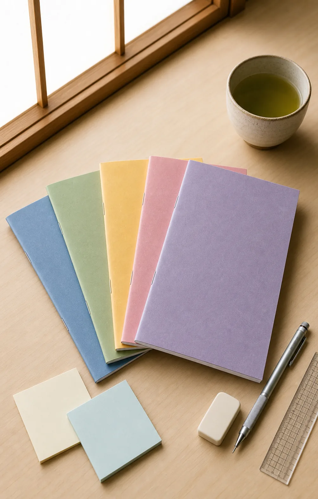

Japanese school supplies
Why Japanese Students Love KOKUYO Campus Notebooks
In a Japanese study setup, the notebook is rarely the loudest object on the desk. It is the dependable one that makes showing up, sorting subjects, and starting the next page feel easy.
KOKUYO Campus Notebooks capture that practical spirit in a slim, familiar format—and a rainbow five-pack makes it simple to give every subject its own color.
See the KOKUYO Campus 5-Pack on Amazon
FTC affiliate disclosure
As an Amazon Associate, I earn from qualifying purchases.
This article contains affiliate links. If you purchase through them, this site may earn a commission at no additional cost to you. Check Amazon for current product details, pricing, and availability.
The culture behind the notebook
Japanese stationery is designed to support the routine.
Much of the international fascination with Japanese stationery comes from a simple idea: everyday tools deserve careful thought. A school notebook does not need to look luxurious. It needs to open easily, sit comfortably on a crowded desk, and make information feel approachable.
That mindset fits the rhythm seen in Japanese study culture—class notes, after-school review, entrance-exam preparation, and the quiet desk sessions that now inspire the global “study with me” community. The notebook becomes part of a repeatable ritual: choose the subject, open to a clean page, write the date, and begin.
One color, one subject
A five-color set makes the school day easier to read.
Color-coding is useful before you write a single word. A blue notebook can be mathematics, green can be science, yellow can be language study, pink can be literature, and violet can hold review notes. The exact system is yours; the benefit is recognizing the right notebook at a glance.
For a backpack or a small study desk, several slim notebooks can also feel more manageable than one oversized volume. You carry the subjects you need, keep unrelated notes apart, and see progress build one notebook at a time.
- Assign a clear color to each class or study goal.
- Keep lecture notes separate from practice and review.
- Carry only the notebooks needed for that day.
- Make a minimal desk feel organized without extra containers.
The Campus appeal
Why a simple Japanese notebook feels different.
The attraction is the balance of useful details and visual restraint—not decoration for its own sake.
Easy to start
A familiar, uncomplicated notebook removes setup friction. Open it, choose a heading, and begin the lesson.
Easy to sort
Different cover colors make a subject system visible in a backpack, on a shelf, or across a busy study week.
Easy to carry
A slim notebook format suits students who want focused notes without the bulk of a large binder or planner.
Easy to make yours
The clean appearance works with neat headings, diagrams, sticky flags, or a simple pen-only approach.
Build the atmosphere
Create your own “study with me” desk.
You do not need a perfect room. Clear one useful area, place only the notebook for the current subject in front of you, and keep the next notebooks stacked within reach. Add a mechanical pencil, an eraser, water or tea, and put everything else away for the session.
The colorful covers provide just enough personality for a minimal Japanese study setup. They also photograph beautifully for study journals and desk inspiration without making the workspace feel busy.
Build Your Japanese Study SetupBest for
Who will enjoy Campus Notebooks?
- Students building a color-coded subject system.
- Language learners who want separate notebooks for vocabulary, grammar, reading, and practice.
- Fans of Japanese stationery and Japanese school supplies.
- Anyone creating a calm, practical “study with me” routine.
Bound or rearrangeable?
Choose the page system that fits your study.
A bound Campus Notebook is a strong fit when you enjoy keeping each subject in a simple, fixed sequence. Students who want to insert handouts, carry only selected pages, or rebuild notes for exams may prefer Campus Loose Leaf and its binder-based study culture.
For a notebook-like system with movable pages, also see our guide to a KOKUYO refillable notebook.
The size behind the culture
Why B5—and when does A4 make more sense?
Japanese notebooks are part of a larger paper culture shaped by desks, bags, worksheets, and photocopiers. Continue with our guide to why Japanese students use A4 and B5 notebooks.
Explore A4 and B5 Notebook CultureFrom notebooks to pencils and erasers
Discover two familiar Japanese school supplies.
Explore why the Tombow 8900 wooden pencil has remained recognizable since 1945, and learn how the MONO eraser grew from a pencil-box bonus into a stationery standard.
Read the MONO Eraser GuideA small tool for steady study
Make the next study session easy to begin.
The charm of a KOKUYO Campus Notebook is not that it transforms studying overnight. It makes the ordinary parts feel considered: one color for each subject, one clean page for the next lesson, and a notebook that belongs naturally in a Japanese-inspired study routine.
See KOKUYO Campus Notebooks on AmazonAmazon pricing and availability can change. Review the current listing before purchasing.
Follow the complete learning path
New to Japanese school stationery?
See how paper, notebooks, loose leaf, erasers, and pencils connect in the Japanese school stationery guide.